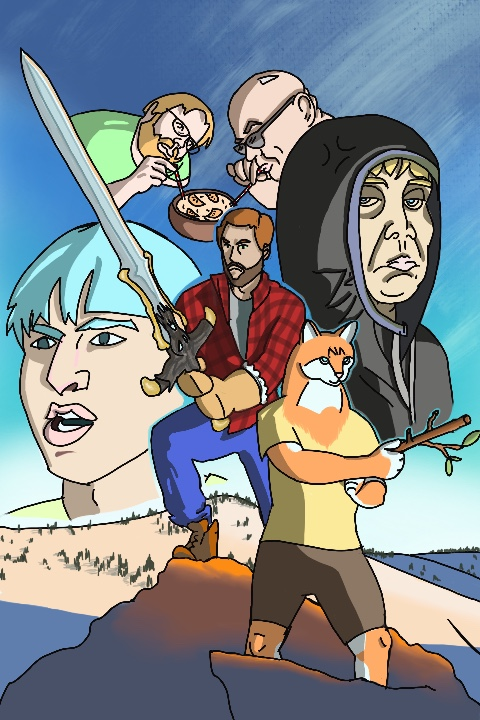
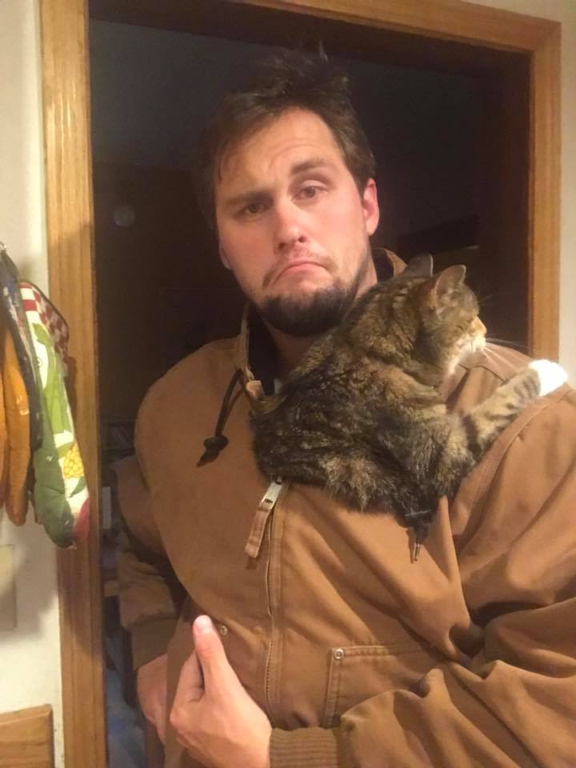
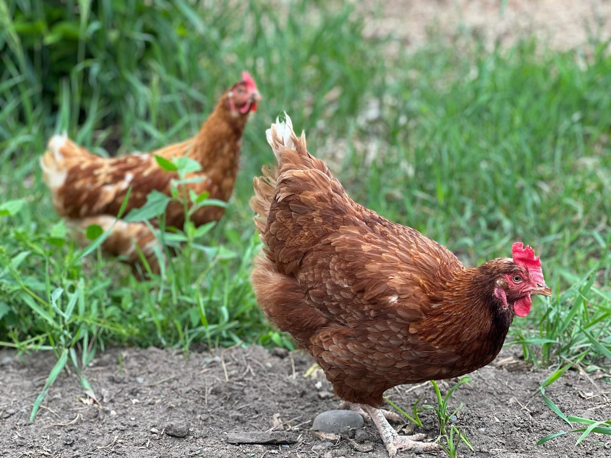

I am passionate about front-end development and design! Since I have picked up the skill I have come across so many different communities and interesting technologies.
But who is this front-end developer? Well I have many wide ranging interests and hobbies. The TLDR is I am just a very positive and understanding guy who really enjoys getting to know people from many walks of life!
Outdoors

Currently you can find me roaming the mountains of my home state of Montana. When I need some time to think or just appreciate where I'm at, I go out for a nice hike, taking in all the natural beauty.
Art and animation

I take a lot of joy in doing art when I can find the free time to do so! I admire animation in particular, and I've been trying my hand at game development too, with my own assets based on characters from Futurama.
Animals and the garden


Animals are the best! Nothing like a nice spring day, getting in some work on the garden and having pets roaming around doing their thing.
Baking
I have also worked as a baker for many years: French breads, cheesecakes, parfaits, quiches and many vegan and gluten-free desserts. Nothing delights me more than to put care and skill into a recipe for others to enjoy!